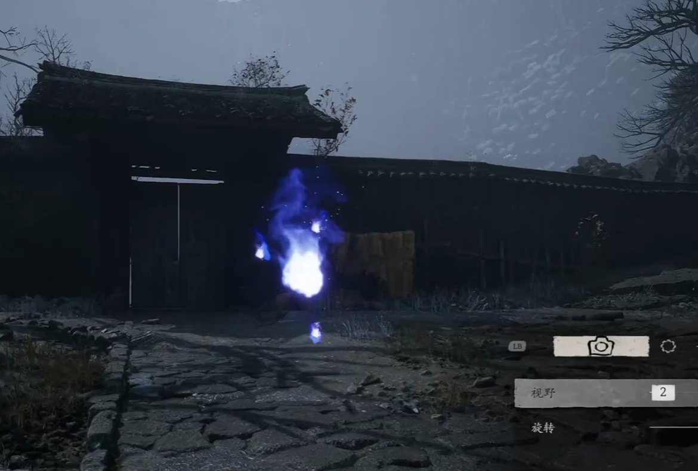
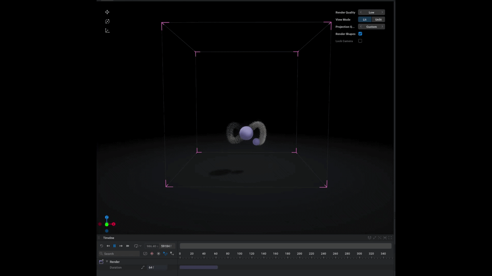
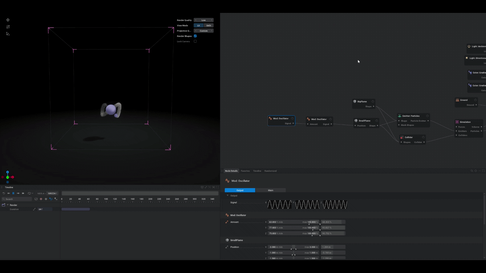
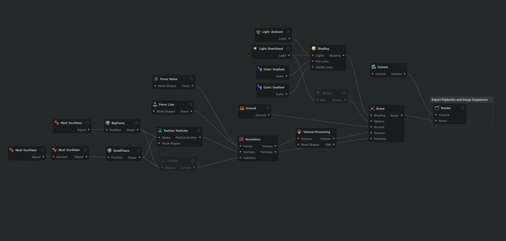
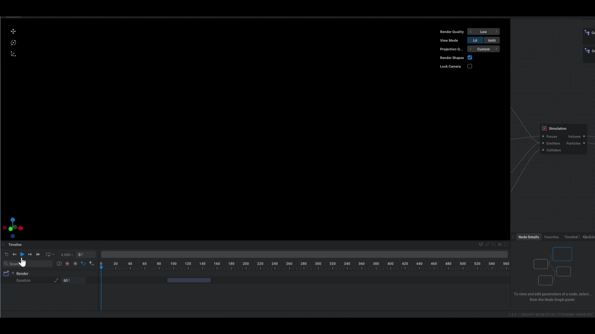
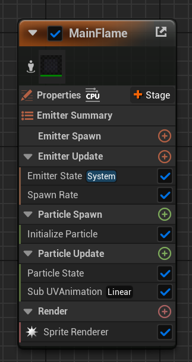
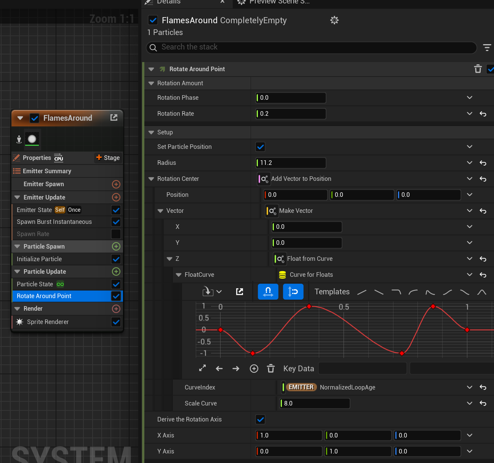
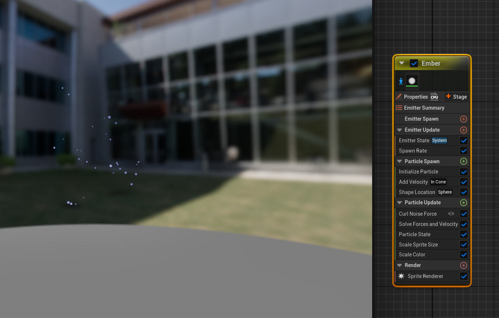

Stylized Flame Spirit Study
VFX Study · EmberGen · Unreal Engine 5 Niagara · 12.2025
Description
This project combines EmberGen and UE5's Niagara System to create a Flame Essence VFX. The core flame animation was first simulated in EmberGen, then exported into multiple Flipbooks and imported into Unreal Engine. Using Niagara, I built the full visual effect for the flame spirit.
The visual design was inspired by the essence creatures from Black Myth: Wukong (see reference image below).

Reference — Essence Creatures from Black Myth: Wukong
Final Result

EmberGen Part
Overall Logic:
- Created a main flame emitter with larger, slower-moving particles to form the core flame body.
- Added a secondary emitter that moves in a looping, Möbius-like path around the main flame. Introduced random motion to make the movement feel more natural.
- Adjusted parameters such as tear, dissipation, and diffusion to refine flame behavior.
- Exported the simulation as a Flipbook for integration into Unreal Engine.
Realize the Möbius-like Trajectory
To make the secondary flame move naturally, I exposed the Shape Emitter's Location and added an Oscillator to drive motion.
For the Möbius-like trajectory:
Step 1: 2D Circular Motion
Created a 2D circular motion on the XY plane by setting the Y phase offset to 90°.

2D circular motion on XY plane
Step 2: Z-axis Oscillation
Added Z-axis oscillation by changing the Z frequency from 1 to 2, so opposite points along the circle move vertically.

Z-axis oscillation added
When viewed from a different camera angle, this circular + vertical motion visually forms a Möbius-loop movement pattern.

Iteration: Making Motion More Natural
To make the Möbius-loop motion more natural and dynamic:
- Added another Mod: Oscillator to adjust the X amount of the existing Oscillator.
- Set the X range to 60%–100% and increased frequency from 1 to 2.
- Adjusted the X phase to 180° for smoother looping transitions.

Möbius motion iteration
Introduced random variations to the XY minimum amount, frequency, and phase values to create a more organic, less mechanical movement pattern.
Final Result in EmberGen
After iterating various parameters — including Velocity Transfer, Injection, Dissipation, Shredding, Diffusion, and Solid Ground — the final flame essence in EmberGen achieved a stable and dynamic look. Then I exported the simulation as multiple Flipbooks with different frame ranges to provide more flexibility when using them in Unreal Engine 5.

EmberGen node setup

EmberGen result
UE5 Part
Niagara System Design Concept
- The overall structure consists of a large central flame surrounded by smaller flames orbiting around it.
- The small flames move in a circular path while randomly shifting up and down along the Z-axis to create a more dynamic, natural motion.
Production Process
- Imported the Flipbook texture and created a master material for the flame.
- In Niagara, if the SubUV animation plays too fast, adjust the particle lifetime, because the animation speed is tied to particle lifespan.
- The main flame emitter forms the core body of the flame.
- For the small orbiting flames, used the Rotate Around Point module to create circular motion around the central flame.


Main Flame Emitter
- Duplicated multiple small flame emitters and adjusted their phase offsets so each one orbits from a different starting position. Then modified the rotation curves to vary their movement timing and direction, creating a more dynamic and natural circular motion around the main flame.
- Optimized the main flame by adding a second large flame emitter using a more transparent Flipbook exported from EmberGen. This secondary layer overlaps the original flame, making the overall effect more vibrant and dynamic.
- Created random ember particles to simulate the small sparks generated by the burning flame:
- Particle size and spawn count are randomized.
- Particles emit outward from the flame's center, varying in number and scale to achieve a natural burning ember effect.


Flame sparks emitter setup
After fine-tuning various parameters, the final flame essence effect was completed and is shown in the demo video at the top of this page.